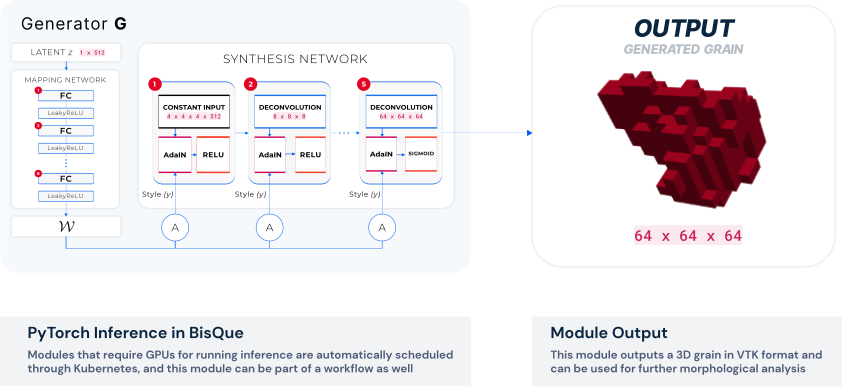

ML/CV Research
Automated Segmentation and Connectivity Analysis for Normal Pressure Hydrocephalus (2021)
NPH Architecture. Modified 3DUnet Architecture for segmenting CT Scans and predicting possible NPH.
We propose an automated method of predicting Normal Pressure Hydrocephalus (NPH) from CT scans. A deep convolutional network segments regions of interest from the scans, which are combined with MRI information to predict NPH. To our knowledge, this is the first method which automatically predicts NPH from CT scans, and incorporates diffusion tractography information for prediction.(Zhang, Khan, Manjunath, & others, 2021)
3DMaterialGAN: Learning 3D Shape Representation from Latent Space for Materials Science Applications (2020)

To facilitate novel progress at the intersection of computer vision and materials science, we propose a 3DMaterialGAN network that is capable of recognizing and synthesizing individual grains whose morphology conforms to a given 3D polycrystalline material microstructure. This Generative Adversarial Network (GAN) architecture yields complex 3D objects from probabilistic latent space vectors with no additional information from 2D rendered images. We show that this method performs comparably or better than state-of-the-art on benchmark annotated 3D datasets, while also being able to distinguish and generate objects that are not easily annotated, such as grain morphologies. The value of our algorithm is demonstrated with analysis on experimental real-world data, namely generating 3D grain structures found in a commercially relevant wrought titanium alloy, which were validated through statistical shape comparison. This framework lays the foundation for the recognition and synthesis of polycrystalline material microstructures, which are used in additive manufacturing, aerospace, and structural design applications (Jangid et al., 2020).
Improving patch-based convolutional neural networks for MRI brain tumor segmentation by leveraging location information (2020)
In this paper, we introduce a novel method to integrate location information with the state-of-the-art patch-based neural networks for brain tumor segmentation. This is motivated by the observation that lesions are not uniformly distributed across different brain parcellation regions and that a locality-sensitive segmentation is likely to obtain better segmentation accuracy. Towards this, we use an existing brain parcellation atlas in the Montreal Neurological Institute (MNI) space and map this atlas to the individual subject data. This mapped atlas in the subject data space is integrated with structural Magnetic Resonance (MR) imaging data, and patch-based neural networks, including 3D U-Net and DeepMedic, are trained to classify the different brain lesions. Multiple state-of-the-art neural networks are trained and integrated with XGBoost fusion in the proposed two-level ensemble method. The first level reduces the uncertainty of the same type of models with different seed initializations, and the second level leverages the advantages of different types of neural network models. The proposed location information fusion method improves the segmentation performance of state-of-the-art networks including 3D U-Net and DeepMedic. Our proposed ensemble also achieves better segmentation performance compared to the state-of-the-art networks in BraTS 2017 and rivals state-of-the-art networks in BraTS 2018 (Kao et al., 2020).
BisQue for 3D Materials Science in the Cloud: Microstructure–Property Linkages (2019)
Accelerating the design and development of new advanced materials is one of the priorities in modern materials science. These efforts are critically dependent on the development of comprehensive materials cyberinfrastructures which enable efficient data storage, management, sharing, and collaboration as well as integration of computational tools that help establish processing–structure–property relationships. In this contribution, we present implementation of such computational tools into a cloud-based platform called BisQue. We first describe the current state of BisQue as an open-source platform for multidisciplinary research in the cloud and its potential for 3D materials science. We then demonstrate how new computational tools, primarily aimed at processing–structure–property relationships, can be implemented into the system. Specifically, in this work, we develop a module for BisQue that enables microstructure-sensitive predictions of effective yield strength of two-phase materials. Towards this end, we present an implementation of a computationally efficient data-driven model into the BisQue platform. The new module is made available online (web address: https://bisque.ece.ucsb.edu/module_service/Composite_Strength/) and can be used from a web browser without any special software and with minimal computational requirements on the user end. The capabilities of the module for rapid property screening are demonstrated in case studies with two different methodologies based on datasets containing 3D microstructure information from (i) synthetic generation and (ii) sampling large 3D volumes obtained in experiments. (Latypov et al., 2019)